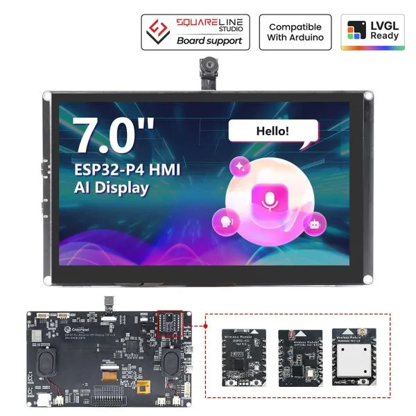

CrowPanel Advanced 7.0" ESP32-P4
Elecrow · Elecrow CrowPanel Advanced 7" ESP32-P4 – 1024×600 IPS, ESP32-C6 Wi-Fi 6
CrowPanel Advanced 7.0" ESP32-P4 is a 7.0" 1024x600 IPS Capacitive touch ESP32 display board by Elecrow based on the ESP32-P4 with 16MB flash, 32MB PSRAM.
Features, ports & interfaces
- Capacitive touch
- 32 MB PSRAM
- 16 MB flash
- Wi-Fi 6 (802.11ax, 2.4 GHz) via ESP32-C6 co-processor – version from the ESP32-C6 datasheet
- Bluetooth 5.3 (LE) via ESP32-C6 co-processor – version from the ESP32-C6 datasheet
- Thread (802.15.4) – IEEE 802.15.4 radio of the ESP32-C6 co-processor – SoC capability per the Espressif datasheet; needs firmware support
- Zigbee (802.15.4) – IEEE 802.15.4 radio of the ESP32-C6 co-processor – SoC capability per the Espressif datasheet; needs firmware support
- Matter-capable radio (Wi-Fi / Thread) – ESP32-C6 co-processor capability per the Espressif datasheet; firmware-dependent
- Serial port (UART): UART
- I2C
- GPIO header GPIO pin header
- Speaker: 2x speakers
Specifications
| Parameter | Value | Source |
|---|---|---|
| Screen size | 7.0" | source |
| Resolution | 1024x600 | source |
| Panel | IPS | source |
| Shape | Rectangular | |
| Display driver | EK79007 | source |
| Touch | Capacitive | source |
| MCU / SoC | ESP32-P4NRW32 (RISC-V dual-core up to 400 MHz + LP core 40 MHz) | source |
| MCU family | ESP32-P4 | source |
| Co-processor | ESP32-C6 | source |
| CPU frequency | 400 MHz | source |
| Flash | 16MB | source |
| PSRAM | 32MB | source |
| Wi-Fi | 2.4 GHz Wi-Fi 6 (ESP32-C6) | source |
| Bluetooth | Bluetooth 5.3 and BLE | source |
| USB | USB 2.0 | source |
| Category | Elecrow CrowPanel | |
| Brightness | 400 cd/m² (typ.) | source |
| Colors | 16.7M (8-bit) | source |
| Connectivity | Optional module (vendor): Zigbee, LoRa, nRF2401, Matter, Thread, Wi-Fi HaLow | source |
| GPIO | GPIO pin header | source |
| I2C port | I2C | source |
| Speaker interface | 2x speakers | source |
| Touch detail | Capacitive (single / 5-point) | |
| UART port | UART | source |
| Vendor | Elecrow |